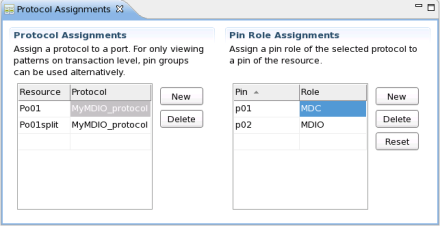

Protocol assignments
The protocol assignments editor allows you to assign:
- Prts and pin groups to a protocol
- Reource (hardware) pins of port to pin roles

Note Pin groups assigned to a protocol can only be viewed on transaction
level.
Assigning pin groups may be useful for displaying transaction sequences next to simulated vectors in the pattern editor.
Functional changes
- Introduced in SmarTest 7.1.0